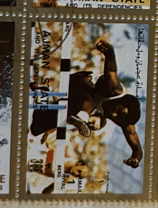
| SOURCE | TITLE| IMAGE MATCH | click to source page |
| eBay | Mint Hinged Olympics Stamps for sale | eBay | 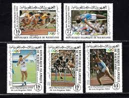 |
| Shutterstock | Archery Olympics: Over 694 Royalty-Free Licensable Stock Photos | Shutterstock | 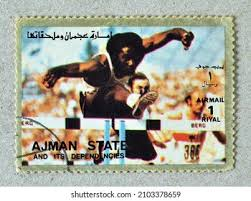 |
| Dreamstime.com | Isolated Ajman State Stamp editorial stock image. Image of issue - 389293674 | 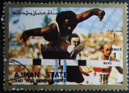 |
| eBay | Umm Al Qiwain: 16 used/CTO small stamps in sheet, Summer Olympic 1972, Mi#954-69 | eBay | 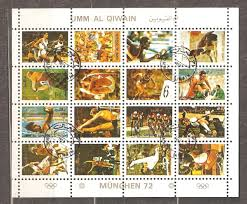 |
| eBay | Umm Al Qiwain - 1972 Munich Olympics Sheetlet, MNH, 16 x 1 Riyal Airmail Values | eBay | 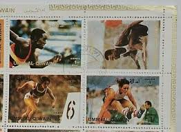 |
| Flickr | Imagen (195) | El Kiro Sellos | Flickr | 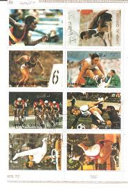 |
| Free stamp catalogue | Stamps from Mauritania - Freestampcatalogue.com - The free online stampcatalogue with over 500.000 stamps listed. | 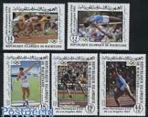 |
| eBay | Mauritanian Olympics Stamps for sale | eBay | 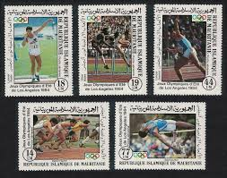 |
| eBay | Mauritania 821-825 (completa Edizione) usato 1984 Olimpiade Los Angeles | eBay | 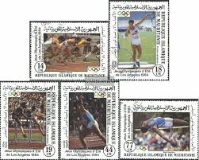 |
| Mystic Stamp Company | 427-30 - 1979 Mauritania - Mystic Stamp Company | 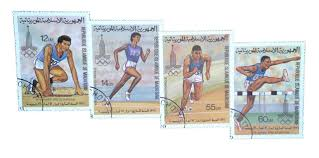 |
| eBay | UAE 1973 UMM AL QIWAIN MUNICH 1972 OLYMPIC 16 STAMPS FOUR BLOCK OF FOUR MNH CTO | eBay | 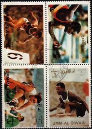 |
| eBay | Mauretanien - Olympische Sommerspiele LA Satz postfrisch 1984 Mi. 821-825 | eBay | 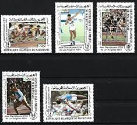 |
| eBay | Mint Never Hinged/MNH Olympics Mauritanian Stamps for sale | eBay | 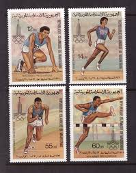 |
| Journal & Courier | Ray Ewry will be memorialized on U.S. 231 | 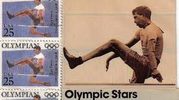 |
| eBay | Olympics Used Postage African Stamps for sale | eBay | 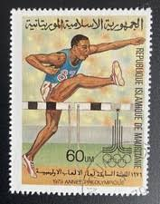 |
| Colnect | Stamp: XXI Olympiad Montreal Canada 1976 (Scotland, Eynhallow: Cinderella Stamps(Summer Olympic Games 1976 - Montreal) Col:GB-HI 1976-03 📮 | 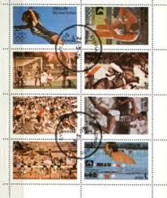 |
| Shutterstock | 10+ Hundred México 1968 Royalty-Free Images, Stock Photos & Pictures | Shutterstock | 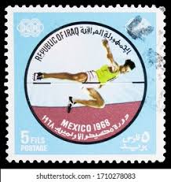 |
| Colnect | Stamp: Hurdling (Ras al Khaimah(Summer Olympic Games 1972 - Munich (I)) Mi:RK 384A,Sn:RK C61a,Yt:RK PA35,Col:RK 1970.00.00-08a 📮 | 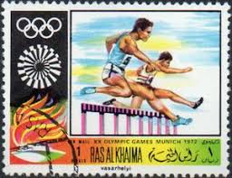 |
| Dreamstime.com | Athletics, Olympic Games editorial photo. Image of communication - 105296791 | 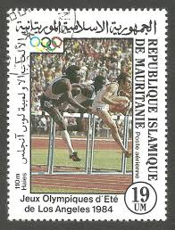 |
| kpolsson.com | Postage Stamp Design Errors | 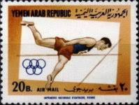 |
| HipStamp | Togo 1980 - CTO - Scott #C415 | Africa - Togo, Air Mail Stamp / HipStamp | 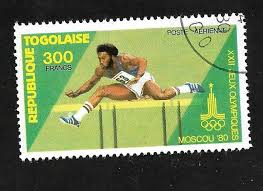 |
| Richter Stamps | Umm al Qiwain – Richter Stamps | 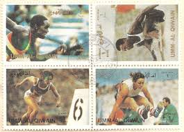 |
| BalkanAuction | Somalia 1984 - Olympics MNH | Postage stamps | Philately | BalkanAuction | 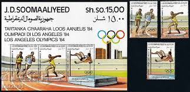 |
| Shutterstock | Ras Ai Khaimah Circa 1972 Stamp Stock Photo 108393128 | Shutterstock | 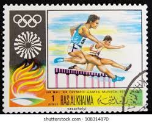 |
| A Tense Situation in Pakse, Laos... 🛑 🚫 ✋ #CrossingBorders #Immigration | 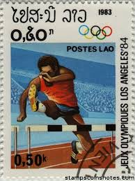 | |
| Shutterstock | Dubai Circa 1972 Cancelled Postage Stamp Stock Photo 1980321623 | Shutterstock | 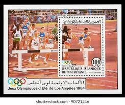 |
| Shutterstock | Iraq Circa 1968 Cancelled Postage Stamp Stock Photo 2674179715 | Shutterstock | 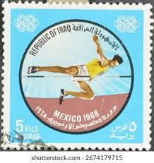 |
| Dreamstime.com | Postage Stamp Printed in Umm Al Quwain Shows Hurdling, Summer Olympics 1972, Munich Serie, Circa 1971 Editorial Stock Image - Image of correspondence, postal: 167615729 | 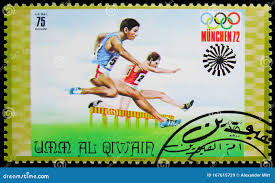 |
| Shutterstock | Los Angeles Stamp: Over 1,000 Royalty-Free Licensable Stock Photos | Shutterstock | 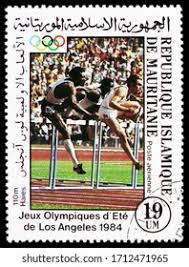 |
| eBay | Somalia 535-537,537a, MNH. Mi 353-355, Bl.15. Olympics Los Angeles-1984. Discus, | eBay | 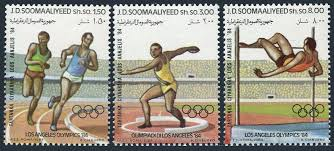 |
| Alamy | IRAQ - CIRCA 1968: a stamp printed in the Iraq shows Mother and Children, UNICEF, circa 1968 Stock Photo - Alamy | 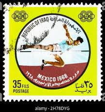 |
| eBay | Las mejores ofertas en Mauritana con anulación de favor/CTO de sellos | eBay | 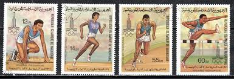 |
| Shutterstock | Vintage Postal Stamp Letter: Over 211,911 Royalty-Free Licensable Stock Photos | Shutterstock | 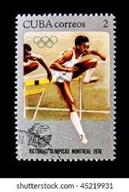 |
| eBay | SOMALIA 1984 353-55 Block 15 535-37a Olympics Los Angeles Sport Runners ** | eBay | 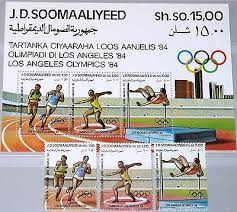 |
| eBay | Lot of post stamps | eBay | 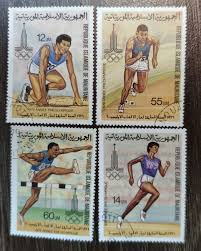 |
| Shutterstock | Vietnam-circa 1984 Stamp Printed Vietnam Shows Stock Photo 173307998 | Shutterstock | 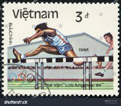 |
| Dreamstime.com | Hurdling, Olympic Games 1956 - Melbourne Serie, Circa 1956 Editorial Stock Photo - Image of postmark, mail: 135418003 | 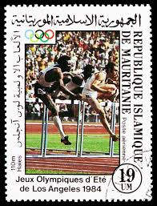 |
| HipStamp | Ajman 1968 Hurdling 1R from Mexico Olympics perf set of 8... | Middle East - United Arab Emirates, Stamp / HipStamp | 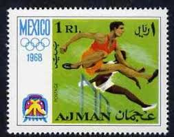 |
| Poppe Stamps | Poppe Stamps: Congo - Brazzaville, 1980, 717, Olympic Games, Athletics - stamps for sale by theme and country | 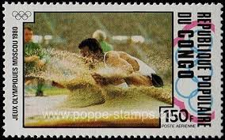 |
| Shutterstock | Niger Stamp: Over 575 Royalty-Free Licensable Stock Photos | Shutterstock | 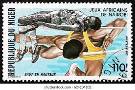 |
| Shutterstock | Munich Stamp: Over 1,849 Royalty-Free Licensable Stock Photos | Shutterstock | 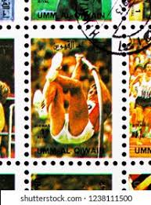 |
| Dreamstime.com | Cuba Postage Stamp from the `20th Anniversary of Intercosmos Program` Issue Shows Space Satellite, Circa 1987 Editorial Image - Image of heritage, 20th: 101757650 | 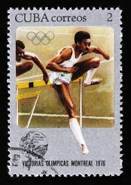 |
| HipStamp | Umm-Al-Qiwain-Olympic Games CTO Mini-Sheet of 16 Stamp-Vfs-Nh Very Fine | Middle East - Saudi Arabia, Stamp / HipStamp | 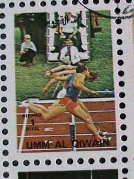 |
| Shutterstock | Sello Postal México: Over 2,741 Royalty-Free Licensable Stock Photos | Shutterstock | 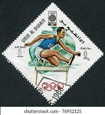 |
| X | Team Somalia (@teamsomalia) / Posts / X | 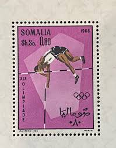 |
| eBay | MAURITANIA MAURETANIEN 1979 652-55 427-30 Sport Olympics 1980 Moscow Running MNH | eBay | 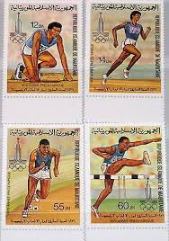 |
| eBay UK | Used Mauritanian Stamps for sale | eBay UK | 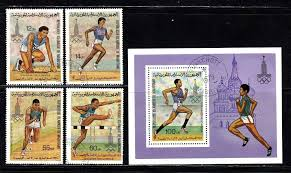 |
| eBay | MAURITANIA #C228 1984 SUMMER OLYMPICS MINT VF NH O.G S/S CTO | eBay | 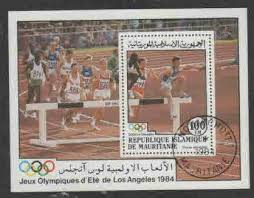 |
| Pngtree | Corredor Angustiado Deportista Lesionado Agarrando El Tobillo De Una Articulación Rota Y Torcida Foto E Imagen Para Descarga Gratuita - Pngtree | 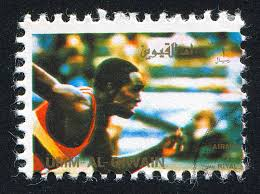 |
| Dreamstime.com | 150 Runner Montreal Stock Photos - Free & Royalty-Free Stock Photos from Dreamstime | |
| eBay | 👉 RAS AL KHAIMA (UAE) 1972 MUNICH (GERMANY) OLYMPIAD x6 CTO S/S SPORTS, HORSES | eBay | |
| eBay | Mauritania block58 (complete issue) used 1984 olympic. Summer ´ | eBay | |
| eBay | Scott 3068, Gutter Pair- Atlanta Summer Olympics- MNH 32c 1996- unused mint | eBay | |
| Wikimedia.org | File:LIY 1984 MiNr1381A pm B002.jpg - Wikimedia Commons | |
| Shutterstock | 8+ Hundred Mauritania Stamp Royalty-Free Images, Stock Photos & Pictures | Shutterstock | |
| GetArchive | 6 Stamps of libya, Olympic games Images: PICRYL - Public Domain Media Search Engine Public Domain Search | |
| eBay | Uganda 1997 - OLYMPIC WINNERS - Sheet of 9 Stamps (Scott #1477) - MNH | eBay | |
| eBay | Niger - Olympische Sommerspiele Moskau Satz postfrisch 1980 Mi. 695-698 | eBay | |
| Todocolección | sd)namibia. sun. bird of peace. white dove. sou - Buy Coins of Africa on todocoleccion |
{kind=link}